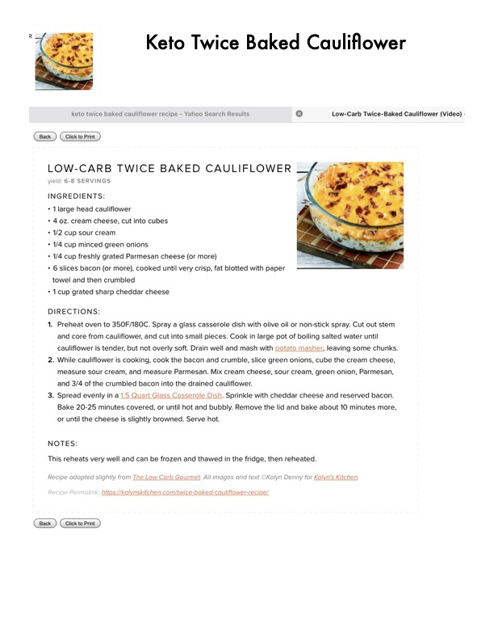

Low-Carb Twice Baked Cauliflower

Original cookbook page 29
A delicious low-carb casserole with cauliflower, cream cheese, sour cream, bacon, and cheese that reheats very well and can be frozen.
Cook: 30-35 minutes
Ingredients
- 1 large head cauliflower
- 4 oz cream cheese, cut into cubes
- 1/2 cup sour cream
- 1/4 cup minced green onions
- 1/4 cup freshly grated Parmesan cheese (or more)
- 6 slices bacon (or more), cooked until very crisp and crumbled
- 1 cup grated sharp cheddar cheese
Instructions
- Preheat oven to 350°F/180°C. Spray a glass casserole dish with olive oil or non-stick spray. Cut out stem and core from cauliflower, and cut into small pieces.
- Cook in large pot of boiling salted water until cauliflower is tender, but not overly soft. Drain well and mash with a potato masher, leaving some chunks.
- While cauliflower is cooking, cook the bacon and crumble, slice green onions, cube the cream cheese, measure sour cream, and measure Parmesan.
- Mix cream cheese, sour cream, green onion, Parmesan, and 3/4 of the crumbled bacon into the drained cauliflower.
- Spread evenly in a 1.5 quart glass casserole dish. Sprinkle with cheddar cheese and reserved bacon.
- Bake 20-25 minutes covered, or until hot and bubbly.
- Remove the lid and bake about 10 minutes more, or until the cheese is slightly browned. Serve hot.
Recipe #29 from collection